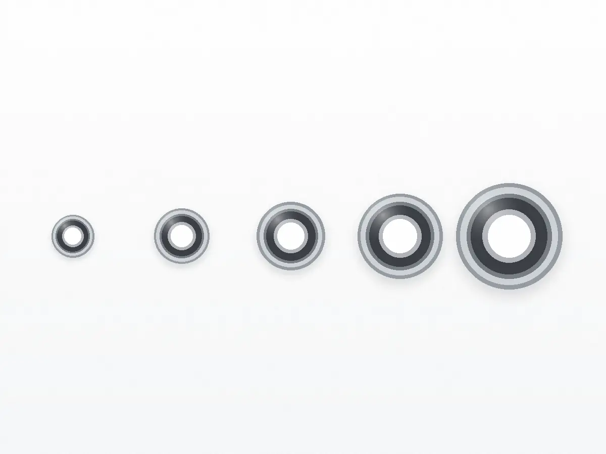
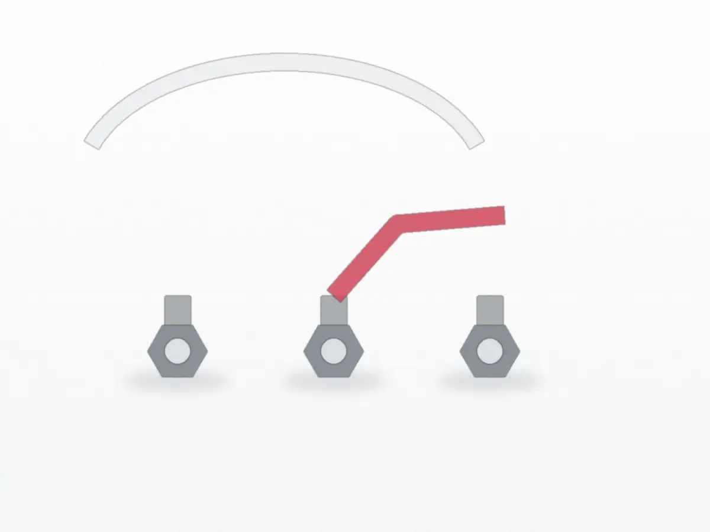
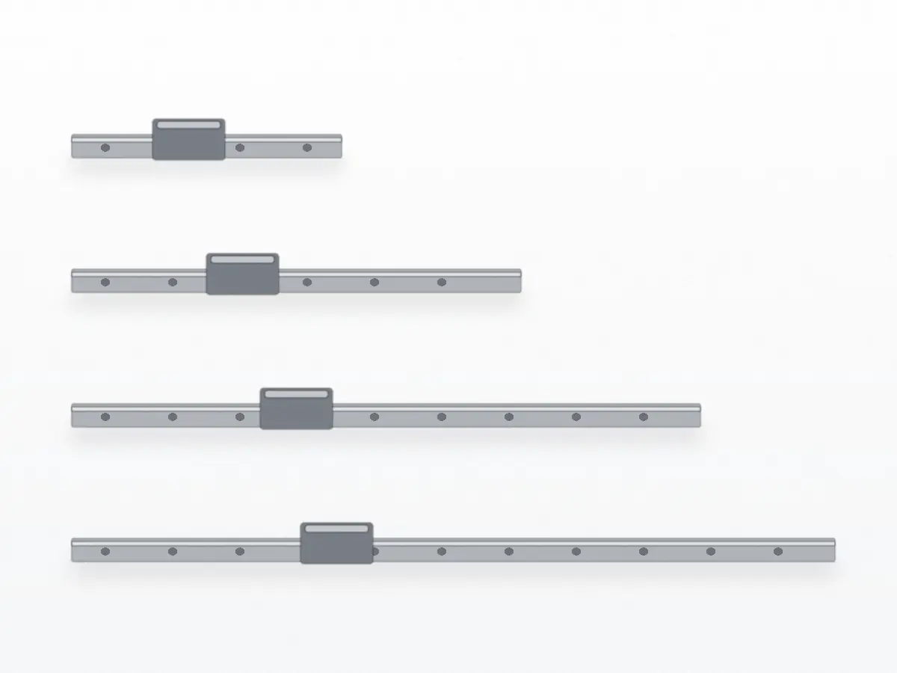
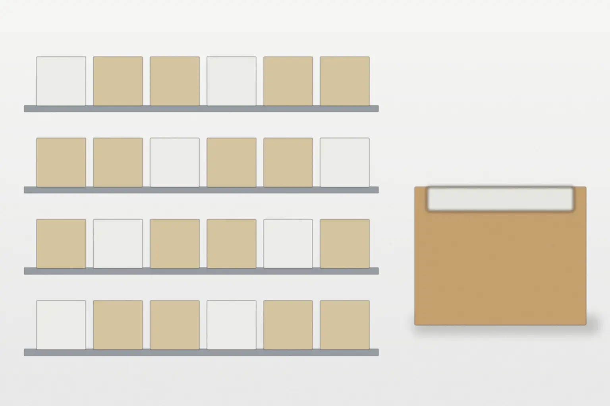

ベアリング
内径 3–50 mm
深溝玉軸受・
ベアリング・空圧継手・リニアガイドの専門商社
寸法・用途・材質のどれか1つから、在庫と納期を確かめられます。
購買・設備保全の担当の方へ 1個から 見積もり無料

内径 3–50 mm
深溝玉軸受・

チューブ外径 4–12 mm
ワンタッチ継手・

レール長 100–1,000 mm
小形・
写真はAI生成のイメージです。
| 区分 | 取り寄せ日数 | 最小数量 | 送料（税込） | 当日出荷の締め |
|---|---|---|---|---|
| 在庫品3分野の標準品 | 当日〜翌営業日 | 1個 | 880円 | 平日 14:00 |
| 国内取り寄せ品メーカーの在庫から | 2〜5営業日 | メーカーの単位 | 880円 | ― |
| 長尺・追加工レールの切断など | 2〜4週 | 1本 | 1,650円〜 | ― |
| 送料無料の条件 | 1回の注文が 11,000円以上（税込）。 | |||
測った寸法が色の帯の中なら、品番が分からなくても探せます。
扱う内径 d（mm）
用途回転を支える 材質軸受鋼・
扱うチューブ外径（mm）
用途空気を送る・
扱うレール長 L（mm）
用途まっすぐ動かす 材質軸受鋼・
| 日付 | 区分 | 内容 | 分類 |
|---|---|---|---|
| 取り扱い開始 | レール長100mmからの | リニアガイド | |
| お知らせ | 年末年始の休業日 | 全分類 | |
| 取り扱い開始 | 樹脂製のワンタッチ継手 | 空圧継手 |
平日の流れと締め時刻です。

受付フォーム・FAX・電話
在庫の確認受付のあと、在庫の有無を返信
梱包小箱ごとに緩衝材で
出荷在庫品は、下の線の締め時刻までの注文で当日
平日の受付時間朱の線：在庫品を当日出荷できる注文の時間
品番が分からなくても、次の3つが分かれば見積もりと在庫の確認ができます。分かる範囲で書いてください。
分かる範囲の寸法内径・外径・幅、チューブの外径、レール長など
使う場所回転数・荷重・水や油がかかるか
数量と、いつまでに必要か例：4個、今月の末まで